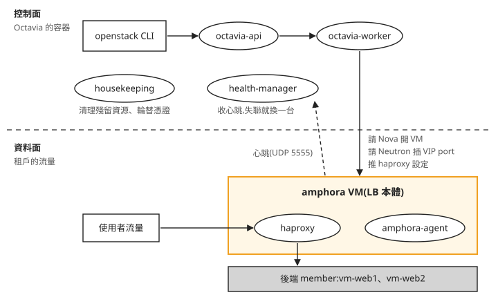
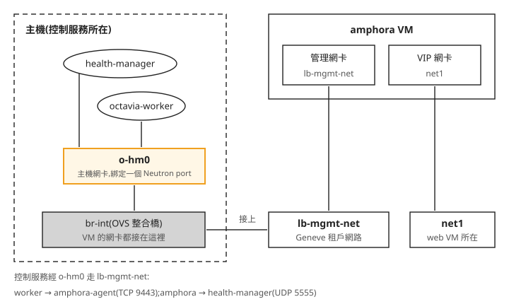
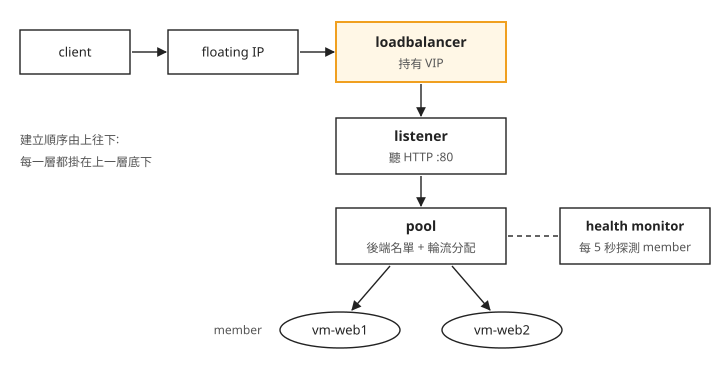
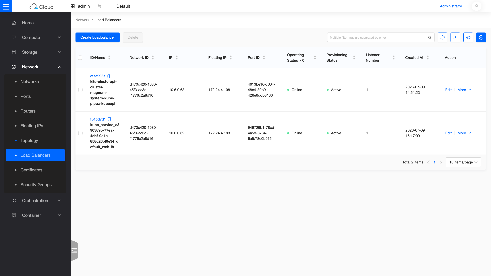

Day 4: 用 Octavia 建負載平衡器——amphora、管理網路與 listener/pool/member¶
Day 2 開出來的 VM,靠一個 floating IP 讓外面連得到。假設現在有兩台 VM 跑同一個網站,你希望使用者只記一個位址,請求平均分給兩台;其中一台當機時,請求就不要再送過去。floating IP 一次只能綁在一台 VM 上,做不到這件事,需要的是一台負載平衡器(load balancer,以下簡稱 LB):使用者一律連到它,由它決定把每個請求轉給後面哪一台。
OpenStack 提供 LB 的服務叫 Octavia。這一章用 Kolla 把 Octavia 加進 Day 1 部好的雲,再以租戶身分建一台 LB,放在兩台 web VM 前面,最後對它連續 curl 幾次,看回應是不是在兩台之間輪流出現。讀完之後,LB 卡在 PENDING_CREATE、或後端被標成 ERROR 時,你能判斷問題出在 Octavia 的控制服務、amphora 的管理網路,還是後端的 VM 本身。
Octavia 的 LB 是一台 VM¶
在 Octavia 的預設做法裡,你每建一台 LB,Octavia 就替你開一台小 VM,裡面跑著開源的負載平衡軟體 haproxy。這台 VM 叫 amphora,它就是 LB 本體:使用者的流量進到 amphora,由裡面的 haproxy 轉給後端。
Octavia 自己的程式不轉送任何流量,它們負責管理 amphora。下面這張圖把 Octavia 的容器和 amphora 分成上下兩層,上層是控制面(負責建立、設定、監控),下層是資料面(使用者的流量實際走過的地方):

照著圖由上往下看:
- octavia-worker 做實際的建立工作。 你下
openstack loadbalancer create,API 收下請求後交給 worker,worker 請 Nova 開 amphora、請 Neutron 給它一個對外的位址,再把 haproxy 的設定推進去。 - health-manager 負責顧 amphora。 每台 amphora 定期用 UDP 5555 回報心跳,太久沒收到,health-manager 就判定那台 amphora 壞了,開一台新的取代它(這個動作叫 failover)。
- 使用者的流量只經過下層。 控制面的容器停掉,已經建好的 LB 還是照常轉送;受影響的是建新 LB、改設定和 failover。
所以 LB 出問題時,先分清楚是哪一層:建不出來、狀態卡住,看控制面;建好了但連不到後端,看資料面。
開始之前¶
這一章接在 Day 2、Day 3 之後,需要:
- Day 1 部好的雲,以及 kolla 的 venv(
source ~/kolla-venv/bin/activate)。 - Day 2 以租戶身分建好的資源:
~/demo-openrc.sh、網路net1與子網subnet1、對外網路ext-net、keypairoslab、flavorm1.small、imageubuntu-24.04。主機要能直接連到ext-net上的 floating IP(Day 2 在br-ex掛的172.24.4.1)。
每台 amphora 都會佔用一份 Nova 的資源:Kolla 預設替 amphora 建的 flavor 是 1 vCPU、1 GB 記憶體、5 GB 磁碟。
步驟 1:準備 image、管理網路與憑證¶
Octavia 開 amphora 時,需要一個裝好 haproxy 和 amphora-agent(amphora 上接收控制服務指令的程式)的 image。官方做法是用 diskimage-builder 自己建,約 15 分鐘,而且需要 debootstrap。OSISM 每月發布預建的 amphora image,有對應 2025.1 的版本,這一章直接下載它。正式環境建議自己建:image 裡裝了什麼、多久更新一次,由你決定。
接下來的設定裡,最需要先弄懂的是 amphora 的管理網路。
amphora 的管理網路:lb-mgmt-net 與 o-hm0¶
上一節的圖裡,worker 要連到 amphora-agent 推設定(TCP 9443),amphora 要把心跳送回 health-manager(UDP 5555)。這兩條連線都需要一個網路,讓主機上的 Octavia 容器和 amphora 互相連得到。這個網路叫 lb-mgmt-net,只給 Octavia 管理用,不走租戶的流量。
麻煩在於 amphora 是 VM,它的網卡接在 Neutron 的虛擬網路上;Octavia 的容器跑在主機上,用的是主機的網路。兩邊要接上,Kolla 提供兩種模式,用 octavia_network_type 選:
| provider 模式(Kolla 預設) | tenant 模式(本課採用) | |
|---|---|---|
| lb-mgmt-net 是什麼 | 一個實體的 VLAN 或 flat 網路(flat:不分 VLAN、直接用整個實體網段) | 一個普通的 Geneve 租戶網路,跟 Day 2 的 net1 同一種 |
| 主機怎麼接進去 | 主機的實體網卡本來就在那個網段上 | Kolla 在 lb-mgmt-net 上建一個 Neutron port,再在主機上造一張叫 o-hm0 的網卡,掛到 br-int 並標上那個 port 的 ID |
| 適合 | 有真實網路設備的正式環境 | 沒有 VLAN 可用的單機實驗環境,例如 Azure VM |
這台 Azure VM 沒有第二個實體網段可以給 Octavia,所以用 tenant 模式。它的接法畫成圖是這樣:

照著圖看兩個重點:
- o-hm0 讓主機在虛擬網路裡看起來像一台 VM。 這件事分三步完成:
- br-int 是 Open vSwitch 的整合橋,所有 VM 的網卡都接在上面。Kolla 把 o-hm0 加到 br-int,並在這個介面上標記 lb-mgmt-net 上那個 Neutron port 的 ID(
iface-id)。這個動作的核心是ovs-vsctl add-port br-int o-hm0 -- set Interface o-hm0 external-ids:iface-id=<port_id>,實際在openvswitch_vswitchd容器裡執行,參數比這裡多。 - 主機上負責虛擬網路的 ovn-controller 依
iface-id把 o-hm0 對應到那個 port,o-hm0 從此接在 lb-mgmt-net 上。 - o-hm0 再用 DHCP 從 lb-mgmt-net 要一個 IP。
- br-int 是 Open vSwitch 的整合橋,所有 VM 的網卡都接在上面。Kolla 把 o-hm0 加到 br-int,並在這個介面上標記 lb-mgmt-net 上那個 Neutron port 的 ID(
- amphora 有兩張網卡。 一張在 lb-mgmt-net,讓控制服務管理它;另一張在 LB 所服務的網路上(這一章是
net1),持有 LB 的 VIP:LB 對外的固定位址(跟 Day 1 的 VIP 一樣,是一個不屬於某台機器固定網卡的位址)。
tenant 模式配 OVN 不在官方支援範圍內
Kolla 2025.1 的文件把 tenant 模式列為開發與測試用途,只標明支援 Open vSwitch 的 Neutron 設定,不建議用在正式環境。這門課的 Neutron 用的是 OVN,Kolla 的 Octavia prechecks 會擋下這個組合,錯誤訊息是 Neutron plugin agent ovn is not supported when octavia_network_type is tenant, only openvswitch is supported currently。同一組 prechecks 也會檢查 Redis(或 Valkey)有沒有打開,見下面的「還要補兩樣」。
Day 1 說過 prechecks 沒過就不要繼續。這一章是例外:prechecks 一定會因為上面這條失敗,而本課選擇用 tenant 模式換一個能在單機 Azure VM 上跑的 amphora,所以直接 deploy、不跑 prechecks。這樣實際能運作:上面第 1 點的 iface-id 接法,ovn-controller 一樣認得。跳過 prechecks 的代價是其他檢查也一併沒跑,這一章需要的另外兩個條件(Redis、dhclient)要照步驟 1 自己補,deploy 完也要照步驟 2 自己確認容器和 o-hm0。代價會在 Day 22 出現:那天全量 prechecks 擋下這行設定,最後把 Octavia 改成只用 OVN provider,amphora 從此不能再用,細節見 Day 22 的prechecks 擋下 Octavia 設定。跟著本課做實驗可以沿用;正式環境請用 provider 模式。
控制服務與 amphora 互相驗證¶
worker 對 amphora-agent 下的指令,等於能改掉一台 LB 的全部設定,所以兩邊連線時要互相驗證身分,用的是雙向 TLS(mTLS):不只 amphora 出示憑證,控制服務也要出示。Kolla 用兩個獨立的 CA 簽這兩邊的憑證:
server_ca:簽 amphora 的憑證,控制服務靠它確認對方真的是自己開的 amphora。client_ca:簽控制服務的憑證,amphora 靠它確認下指令的是 Octavia。
kolla-ansible octavia-certificates 先在 /etc/kolla/octavia-certificates/ 產生兩個 CA 和控制服務的憑證,再把部署要用的四個檔複製到 /etc/kolla/config/octavia/:client.cert-and-key.pem、client_ca.cert.pem、server_ca.cert.pem、server_ca.key.pem。server_ca 的私鑰會複製過去,因為控制服務每開一台 amphora,都要用它簽那台 amphora 的憑證;client_ca 的私鑰不複製,所以控制服務和 amphora 上都沒有能簽出新的控制服務憑證的金鑰,拿到一台 amphora 的內容也沒辦法冒充控制服務。
下載 image、改設定、產生憑證¶
下面這段做三件事。第一段下載 amphora image;檔案不小,可以另開一個終端機跑,同時做後面的設定。中間三行是要加進 /etc/kolla/globals.yml 的設定,不是指令,用編輯器加到檔尾即可:enable_octavia 打開 Octavia、octavia_network_type 選 tenant 模式、octavia_auto_configure 讓 Kolla 自動建好 lb-mgmt-net、router、amphora 用的 flavor、security group 和 keypair。最後一行產生憑證:
# amphora image(背景下載)
curl -sL -o /tmp/amphora.qcow2 \
https://nbg1.your-objectstorage.com/osism/openstack-octavia-amphora-image/octavia-amphora-haproxy-2025.1.qcow2
# globals.yml
enable_octavia: "yes"
octavia_network_type: "tenant"
octavia_auto_configure: yes # kolla 自建 lb-mgmt-net/router/flavor/SG/keypair
# 憑證(注意:這個子指令也要 -i,否則找預設 inventory 路徑會出錯)
kolla-ansible octavia-certificates -i ~/all-in-one
octavia-certificates 跟 deploy 一樣要帶 -i ~/all-in-one,漏了會報 Path does not exist,見疑難排解:octavia-certificates 找不到 inventory。
還要補兩樣:Redis 和 dhclient¶
照上面的設定直接 deploy,會連續遇到兩個問題,先在這裡補好。
第一個是 Redis。worker 收到建 LB 的請求後,不是當場做完,而是先把這件工作放進一個任務佇列,再由 worker 取出來執行;做到一半 worker 重啟,工作還在佇列裡,可以接著做。這個佇列叫 jobboard,存在 Redis(一套放在記憶體裡的鍵值資料庫,常用來做佇列和快取)裡;Kolla 2025.1 也接受用 Valkey 取代 Redis,本課用的是 Redis。Kolla 2025.1 只要啟用了 amphora provider,就會打開 jobboard,但 Redis 的開關 enable_redis 預設是 no,打開 Octavia 不會連帶打開它。有跑 prechecks 的話,會在這裡被擋下,訊息是 Redis or Valkey must be enabled when using octavia jobboard;這一章跳過了 prechecks,少了 Redis 時 Octavia 的容器全都正常,直到建第一台 LB 才失敗,而且失敗的方式是卡住不動(見疑難排解:LB 卡在 PENDING_CREATE)。所以先打開 Redis:
第二個是 o-hm0 要 IP 的方式。Kolla 替 o-hm0 產生的 systemd 服務 octavia-interface.service,寫死用 /sbin/dhclient 要 DHCP,但 Ubuntu 24.04 的 cloud image 已經不內建這個程式(套件 isc-dhcp-client)。先在主機上裝好:
步驟 2:deploy¶
設定和憑證都齊了。跟 Day 1 學到的一樣,改完 globals.yml 就重跑部署:
結尾一樣看 PLAY RECAP 的 failed=0。跑完後確認兩件事。第一,sudo docker ps 裡 Octavia 的五個容器都是 Up:octavia_api、octavia_worker、octavia_health_manager、octavia_housekeeping,以及 OVN provider 需要的 octavia_driver_agent。第二,o-hm0 拿到了 lb-mgmt-net 的位址:
狀態要是 UP,而且有一個 10.1.0.x 的位址。10.1.0.0/24 是 Kolla 給 lb-mgmt-subnet 的預設網段,這個位址由 OVN 內建的 DHCP 發出;拿得到它,代表上一步圖上的 o-hm0 → br-int → lb-mgmt-net 這條路通了。如果 deploy 停在 Restart octavia-interface.service,見疑難排解:octavia-interface.service 起不來。
步驟 3:建一台 LB,放在兩台 web VM 前面¶
這一步的指令放在同一段裡,但請一段一段貼,不要整段一次貼上:中間要先查到兩台 web VM 的 IP,再填進建 member 的指令。先看會建出哪些東西。
LB 由哪些物件組成¶
在 Octavia 裡,「一台能用的 LB」是好幾個物件疊起來的,每個物件掛在上一個底下。下面這張圖由上往下就是建立的順序:

照著圖由上往下:
- loadbalancer:LB 本身,持有 VIP。建它的時候 Octavia 才會開 amphora。
- listener:LB 在哪個 port、用什麼協定收請求,這裡是 HTTP 的 80。一台 LB 可以有好幾個 listener,例如同時聽 80 和 443。
- pool:後端的名單,加上分配的方式。
ROUND_ROBIN是依序輪流,第一個請求給第一台、第二個給第二台,以此類推。 - member:名單上的每一台後端,用「IP + port」指定。
- health monitor:掛在 pool 上,定期探測每個 member。這一章的設定是每 5 秒(
--delay 5)送一次 HTTP 請求到/,3 秒(--timeout 3)沒回應算一次失敗;失敗太多次的 member 會被標成ERROR,不再分到流量,恢復後連續成功 3 次(--max-retries 3)才重新標回ONLINE。
最外層的 floating IP 是 Day 2 學過的:把 ext-net 上的一個位址對應到某個 port。這次對應的是 VIP 的 port,所以主機打 floating IP,就會進到 LB。
準備 web VM 的開機腳本¶
兩台 web VM 開機時,要在 80 port 起一個 HTTP 服務,回應自己的 hostname,這樣從回應就看得出請求被送到哪一台。開機時自動執行的腳本叫 user-data,由 cloud-init 在 VM 第一次開機時執行。最小可用的版本如下(Ubuntu 24.04 內建 python3),存成主機上的 /tmp/web-userdata.sh,下面的指令會用 --user-data 把它交給 VM:
建 LB 的整段指令¶
整段指令分成四部分,先說明再貼:
- 上傳 amphora image(admin 身分)。image 要上傳到 Octavia 自己的 project,並加上
amphora這個 tag,Octavia 開 amphora 時是用 tag 找 image。那個 project 的 ID 寫在octavia.conf的amp_image_owner_id,octavia_auto_configure已經填好,第一行從 worker 容器裡讀出來。最後一行pip install python-octaviaclient裝的是openstack loadbalancer系列指令,它不在 Day 1 裝的python-openstackclient裡,要另外裝進 venv。 - 開兩台 web VM(租戶身分)。先在
defaultsecurity group 放行 TCP 80,否則 LB 和 health monitor 都連不到 VM 的 80 port。server create這行建vm-web1,同一行把最後的名字換成vm-web2再跑一次。--config-drive True讓 VM 從一個掛載的唯讀磁碟讀 user-data,跟 Day 2 開 Ubuntu VM 時一樣。 - 建 LB 的物件,順序跟上面的圖一樣。每一行都帶
--wait,等這個物件建好再往下。第一行loadbalancer create會開 amphora,約 2 到 4 分鐘。LB 的名字lb2可以自己取,後面的指令跟著改即可。 - 把 floating IP 接到 VIP,然後從主機
curl六次。
member create 那兩行的 10.10.10.124、10.10.10.188 是本課兩台 web VM 的 IP,你的幾乎一定不同。兩台 VM 建好後,先查它們在 net1 上的 IP,再代入:
填錯的話,health monitor 會把兩個不存在的 member 標成 ERROR,錯誤訊息不會告訴你是 IP 抄錯了。
# image 上傳到 octavia.conf 的 amp_image_owner_id 那個 project,tag 必須是 amphora
AMP_PROJECT=$(sudo docker exec octavia_worker grep amp_image_owner_id /etc/octavia/octavia.conf | awk '{print $3}')
source /etc/kolla/admin-openrc.sh
openstack image create amphora-x64-haproxy --file /tmp/amphora.qcow2 \
--disk-format qcow2 --container-format bare --private --tag amphora \
--project $AMP_PROJECT --property hw_architecture=x86_64 --property hw_rng_model=virtio
pip install python-octaviaclient
# 兩台 web member(user-data 起 http server 回 hostname)
source ~/demo-openrc.sh
openstack security group rule create --proto tcp --dst-port 80 default
openstack server create --flavor m1.small --image ubuntu-24.04 --network net1 \
--key-name oslab --config-drive True --user-data /tmp/web-userdata.sh --wait vm-web1 # web2 同
# LB 全流程(第一次 create 會觸發 amphora VM 開機,2-4 分)
openstack loadbalancer create --name lb2 --vip-subnet-id subnet1 --wait
openstack loadbalancer listener create --name listener1 --protocol HTTP --protocol-port 80 --wait lb2
openstack loadbalancer pool create --name pool1 --lb-algorithm ROUND_ROBIN --listener listener1 --protocol HTTP --wait
openstack loadbalancer member create --subnet-id subnet1 --address 10.10.10.124 --protocol-port 80 --wait pool1
openstack loadbalancer member create --subnet-id subnet1 --address 10.10.10.188 --protocol-port 80 --wait pool1
openstack loadbalancer healthmonitor create --name hm1 --delay 5 --max-retries 3 --timeout 3 --type HTTP --url-path / --wait pool1
# VIP 掛 FIP → host 直接打
VIPPORT=$(openstack loadbalancer show lb2 -c vip_port_id -f value)
LBFIP=$(openstack floating ip create ext-net -c floating_ip_address -f value)
openstack floating ip set --port $VIPPORT $LBFIP
for i in $(seq 6); do curl -s http://$LBFIP/; done # web1/web2 交替 = round robin
最後那個迴圈印出六行 hostname,vm-web1 和 vm-web2 一行一行交替出現,代表請求從 floating IP 進到 amphora,再由 haproxy 依序輪流送到兩台 VM。再看一下 health monitor 對兩個 member 的判斷:
兩個 member 的 operating_status 都要是 ONLINE,provisioning_status 是 ACTIVE。如果有一個是 ERROR,health monitor 對它的探測一直失敗,那台 VM 不會分到流量。
如果結果不對,照第一節的兩層往回查:
loadbalancer create一直沒回來,openstack loadbalancer show lb2的provisioning_status停在PENDING_CREATE:問題在控制面,amphora 可能根本沒開。先看 worker 的 log,見疑難排解:LB 卡在 PENDING_CREATE。- amphora 開起來了,LB 最後卻變成
ERROR:worker 會反覆嘗試連 amphora-agent 的 9443 port 推設定,一直連不上就放棄,把 LB 標成ERROR。這時查管理網路:o-hm0 有沒有10.1.0.x的位址(步驟 2)、amphora 在 lb-mgmt-net 上有沒有位址。 - LB 是
ACTIVE,但curl沒有回應或只回一台:問題在資料面或後端。檢查 member 的 IP 有沒有填對、defaultsecurity group 有沒有放行 80、VM 的 user-data 有沒有把 HTTP 服務跑起來。 - 想確認 amphora 本身:以 admin 身分執行
openstack loadbalancer amphora list,正常的 amphora 狀態是ALLOCATED,角色是STANDALONE(單台,沒有備援),並且有一個 lb-mgmt-net 上的10.1.0.x位址。
步驟 4:OVN provider,不開 amphora 的 LB¶
Octavia 用同一套 API 管理 LB,背後真正實作 LB 的程式可以換,這個可以替換的實作叫 provider。前面用的是預設的 amphora。Neutron 用 OVN 時,Kolla 會再註冊第二個 provider:ovn。它把負載平衡規則直接寫進 OVN 的流量規則,由 OVN 在轉送封包時完成分配,不開任何 VM。
建法幾乎一樣,只多一個 --provider ovn,但協定和演算法要換:
openstack loadbalancer create --name lb-ovn --provider ovn --vip-subnet-id subnet1 --wait
openstack loadbalancer listener create --name lis-ovn --protocol TCP --protocol-port 80 --wait lb-ovn
openstack loadbalancer pool create --name pool-ovn --lb-algorithm SOURCE_IP_PORT --listener lis-ovn --protocol TCP --wait
openstack loadbalancer member create --subnet-id subnet1 --address 10.10.10.124 --protocol-port 80 --wait pool-ovn
# 特徵:L4 only、SOURCE_IP_PORT、無 amphora VM、規則直接進 OVN 流表
跟 amphora provider 比,差別在這幾個參數上:
- listener 是
TCP,不是HTTP。OVN provider 只支援 TCP、UDP、SCTP(一種跟 TCP 同層、常用在電信系統的傳輸協定),看不懂 HTTP 內容,所以不能依網址路徑分流這類 L7 功能。 - 演算法是
SOURCE_IP_PORT:依來源 IP 和 port 決定送往哪一台,這也是 OVN provider 唯一支援的演算法,沒有ROUND_ROBIN。 - health monitor 只支援 TCP 和 UDP-CONNECT 兩種。
- 建好之後
openstack loadbalancer amphora list不會多出 amphora,沒有額外的 VM 佔資源,也不用等 VM 開機。
建好之後,openstack loadbalancer show lb-ovn 的狀態應該是 ACTIVE/ONLINE。這個 LB 沒有掛 floating IP,要測試就從租戶網路內(例如 net1 上的另一台 VM)連它的 VIP。需要 HTTP 層的功能(依路徑分流、HTTP 健康檢查)時用 amphora;只需要把 TCP 連線分散到幾台後端、又不想多開 VM 時,可以考慮 OVN provider。
從儀表板看成果¶
下面是 Skyline 儀表板的 Load Balancer 列表:

Load Balancer 列表(Skyline 檢視):圖中兩台 LB 都是 Day 8 建 Kubernetes cluster 時自動建立的,kubeapi 是 cluster API 的入口,web-lb 由 Service type=LoadBalancer 產生(Kubernetes 裡要求雲端提供 LB 的宣告方式,Day 8 會介紹)。Operating Status 的 Online 來自 health monitor 的持續探測,就是這一章設定的機制。
這一章建的 lb2、lb-ovn 和兩台 web VM 會一直佔著 Nova 的磁碟額度,關機也一樣。Day 8 會因為磁碟不夠開不出新的 amphora,先把它們刪掉,見 Day 8 的「LB 的 amphora 開不出來,Nova 報 No valid host was found」。
疑難排解¶
octavia-certificates 找不到 inventory¶
症狀:kolla-ansible octavia-certificates 報 Path does not exist,找的是 /etc/kolla/ansible/inventory/all-in-one。
原因:這個子指令跟 deploy 一樣,沒帶 -i 時會去找預設的 inventory 路徑。照步驟 1 帶上 -i ~/all-in-one 即可。
octavia-interface.service 起不來,status=203/EXEC¶
症狀:deploy 停在 Restart octavia-interface.service;systemctl status octavia-interface 顯示 dhclient ... status=203/EXEC,意思是要執行的檔案不存在。
原因:Ubuntu 24.04 的 cloud image 沒有 dhclient,Kolla 產生的服務卻寫死 /sbin/dhclient。步驟 1 已經先裝了 isc-dhcp-client;如果是在裝之前就跑了 deploy,裝好後重啟服務,再只補跑 Octavia 的部分:
sudo apt install -y isc-dhcp-client
sudo systemctl reset-failed octavia-interface.service
sudo systemctl start octavia-interface.service
ip -br a show o-hm0 # 應拿到 lb-mgmt-subnet 的 IP(OVN 原生 DHCP 發的)
kolla-ansible deploy -i ~/all-in-one --tags octavia # 補跑剩餘任務
更完整的記錄見排錯手冊:octavia-interface 的 dhclient 問題。
LB 卡在 PENDING_CREATE,amphora 沒有開機¶
症狀:loadbalancer create 之後 LB 一直停在 PENDING_CREATE,Nova 裡看不到 amphora,Octavia 的容器卻都正常。worker 的 log 有 MasterNotFoundError: No master found for 'kolla' 和 Error 111 connecting to 127.0.0.1:6379。
原因:amphora provider 的 jobboard 需要 Redis,而 enable_redis 預設是 no,見步驟 1 的「還要補兩樣」。如果 deploy 時還沒打開 Redis,補上後只部署 Redis 和 Octavia:
echo 'enable_redis: "yes"' >> /etc/kolla/globals.yml
kolla-ansible deploy -i ~/all-in-one --tags redis,octavia
更完整的記錄見排錯手冊:amphora 的 Redis jobboard 問題。Redis 修好之前建的 LB 不會自己恢復,刪除方式見下一項。
卡在 PENDING 的 LB 刪不掉¶
症狀:Redis 沒開時建的 LB 永遠停在 PENDING_CREATE,openstack loadbalancer delete 回 409。
原因:Octavia 不允許修改或刪除狀態是 PENDING_* 的 LB,要等處理中的工作結束。可是這件工作從來沒有進到 jobboard,不會有任何程式把它的狀態改掉。Octavia 沒有提供重置這種狀態的官方工具。
修法:社群常用的做法是進 MariaDB,把那台 LB 在 load_balancer 表裡的 provisioning_status 改成 ERROR,再用 openstack loadbalancer delete --cascade 連同底下的物件一起刪掉。SQL 寫法見排錯手冊的後遺症一節。直接改資料庫只適合實驗環境;正式環境遇到,先找維運團隊或廠商處理。
找不到 /etc/kolla/octavia-openrc.sh¶
症狀:Kolla 的 Octavia 文件用 /etc/kolla/octavia-openrc.sh 上傳 amphora image,但主機上沒有這個檔。
原因:這個檔由 kolla-ansible post-deploy 產生,而且只在 enable_octavia 為 yes 時才產生。這一章打開 Octavia 之後只跑了 deploy,沒有重跑 post-deploy。需要這個檔的話,打開 Octavia 之後重跑 kolla-ansible post-deploy -i ~/all-in-one,就會產生 Octavia 的 openrc。不需要這個檔也能完成本章:步驟 3 用 admin 身分加上 --project $AMP_PROJECT,把 image 放進同一個 project。
想一想¶
- 同學建 LB 之後等了十分鐘,狀態還是
PENDING_CREATE,openstack server list --all-projects也看不到任何 amphora。你會先看 Octavia 的哪個容器、找什麼訊息?如果 amphora 有開起來、但 LB 最後變成ERROR,你會改查哪一段網路? - 一台 LB 運作正常時,主機上的
octavia_worker和octavia_health_manager容器都停了。正在curl這台 LB 的使用者會發現嗎?這段期間如果 amphora 當機,會發生什麼事? - 有個服務只需要把 TCP 連線分給三台後端,不需要看 HTTP 內容,而且這朵雲的運算資源很吃緊。你會選 amphora 還是 ovn provider?如果需求變成要依網址路徑把
/api送到另一組後端呢?
小結¶
Octavia 的預設做法是替每台 LB 開一台 amphora VM,裡面的 haproxy 處理使用者的流量;Octavia 的容器負責開 amphora、推設定、收心跳、壞了就換一台,控制服務停掉不影響已經在轉送的流量。控制服務要連到 amphora,需要管理網路 lb-mgmt-net,單機環境用 tenant 模式,讓主機透過 o-hm0 這張網卡接進去,兩邊用各自的 CA 互相驗證。一台能用的 LB 由 loadbalancer、listener、pool、member 疊成,health monitor 決定哪些 member 能分到流量。之後遇到 LB 的問題,先分清楚是建不出來(看 worker 和 jobboard)、amphora 失聯(看 o-hm0 和 lb-mgmt-net),還是建好了卻連不到後端(看 member、security group 和後端服務本身)。
延伸閱讀¶
想再深入,可以從這幾份開始:
- Octavia 官方介紹 —— amphora 架構與各個控制服務的官方說明。
- Kolla-Ansible 的 Octavia 指南 —— 憑證產生、管理網路的兩種模式、OVN provider 的設定,本章最容易卡住的幾步都在這裡。
- Octavia Basic Cookbook —— 各種 LB 組法(TCP、HTTP、健康檢查、TLS)的官方範例,本章只做了最基本的一種。
- OVN Octavia provider 說明 —— OVN provider 支援的協定、演算法與 health monitor 類型。
下一步¶
LB 之後,Day 5 加上存放憑證與密鑰的服務 Barbican,並回頭用 Day 1 就已經部好的 Heat,以範本一次建立多項資源。之後用 Magnum 建 Kubernetes cluster 時,會用 Barbican 存放 cluster 的憑證。